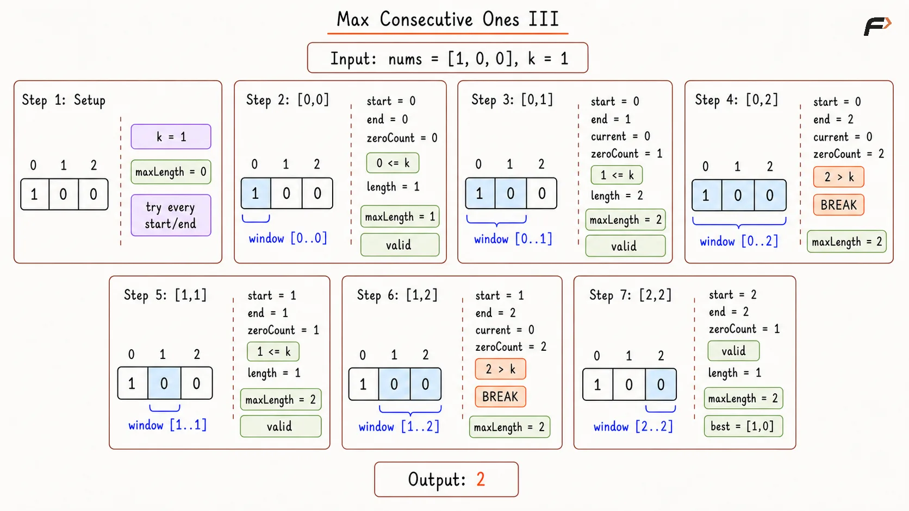
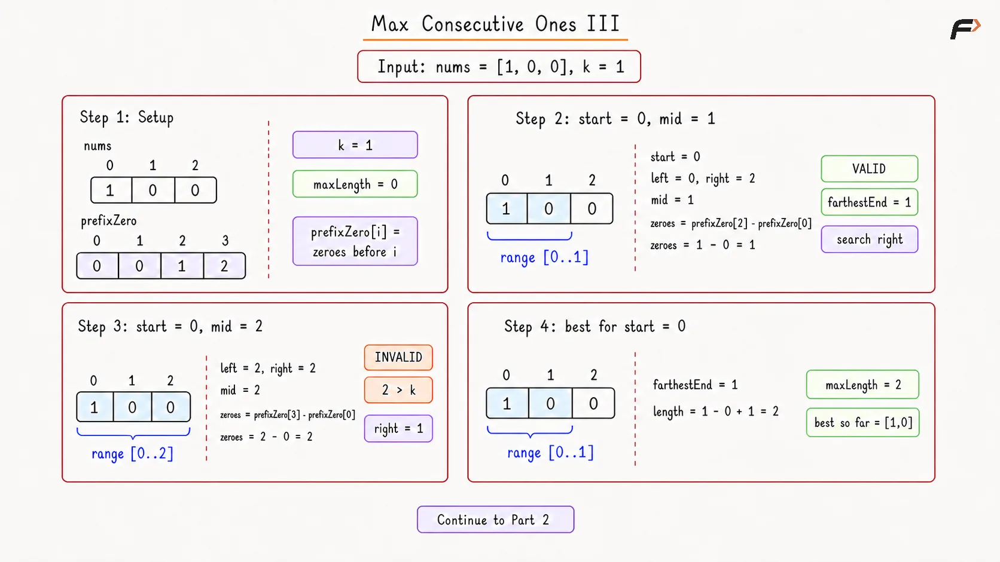
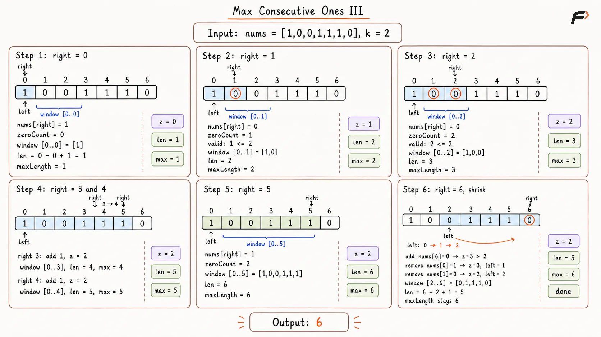

Max Consecutive Ones III: Flip at Most K Zeros
Given a binary array nums and an integer k, return the maximum number of consecutive 1s in the array if at most k zeroes can be flipped.
Flipping a zero means changing it from 0 to 1.
Example 1
Input: nums = [1, 1, 1, 0, 0, 0, 1, 1, 1, 1, 0], k = 2
Output: 6
Explanation: We can flip two zeros in the subarray [0, 0, 1, 1, 1, 1]. After flipping them, we get 6 consecutive ones.
Example 2
Input: nums = [0, 0, 1, 1, 0, 0, 1, 1, 1, 0, 1, 1, 0, 0, 0, 1, 1, 1, 1], k = 3
Output: 10
Explanation: The longest valid subarray contains at most 3 zeros, so those zeros can be flipped to form consecutive ones.
Brute Force Approach
Every contiguous subarray represents a possible group of consecutive 1s after flipping the zeroes present inside the range. A subarray remains valid as long as the zero count does not exceed k.
Starting from every index and expanding toward the right examines every possible candidate. Expansion from one start can stop immediately after the zero count exceeds k because adding more elements cannot reduce the number of zeroes already present.
Algorithm
Store the array size in n and initialize maxLength with 0 for tracking the longest valid subarray found so far.
Select every index start as a possible beginning and initialize zeroCount with 0 for the new subarray.
Move end from start toward the final index, increasing zeroCount whenever
nums[end]equals 0.Stop the current expansion when
zeroCount > k, because every longer subarray from the same start will still require more than k flips.Update maxLength with
end - start + 1whenever zeroCount remains at most k.Return maxLength after expansion from every starting position has finished.
Dry Run

Max Consecutive Ones Brute Force Dry Run.png
Solution
#include <bits/stdc++.h>
using namespace std;
class Solution {
public:
// Finds the longest valid subarray by expanding from every start.
int longestOnes(vector<int>& nums, int k) {
int n = nums.size();
int maxLength = 0;
// Try every index as the beginning of the subarray.
for (int start = 0; start < n; start++) {
int zeroCount = 0;
// Expand until the current range requires too many flips.
for (int end = start; end < n; end++) {
// Count every zero that would need to be flipped.
if (nums[end] == 0) {
zeroCount++;
}
// No longer range from this start can become valid again.
if (zeroCount > k) {
break;
}
maxLength = max(
maxLength,
end - start + 1
);
}
}
return maxLength;
}
};
int main() {
vector<int> nums = {
1, 1, 1, 0, 0, 0, 1, 1, 1, 1, 0
};
int k = 2;
Solution solution;
cout << solution.longestOnes(nums, k) << endl;
return 0;
}Complexity Analysis
Time Complexity: O(N²), where N represents the array size. Expansion from every starting index may traverse most of the remaining array.
Space Complexity: O(1), because only index variables, zeroCount, and maxLength require auxiliary storage.
Better Approach
The Brute Force Approach counts zeroes repeatedly across overlapping subarrays. A prefix-zero array stores the total number of zeroes appearing before every position, allowing any subarray zero count to be calculated through subtraction.
For a fixed start, the zero count never decreases as end moves toward the right. Such monotonic behaviour allows binary search for the farthest end containing at most k zeroes. The farthest valid end produces the longest valid subarray for the selected start.
Algorithm
Build prefixZero with size
n + 1, whereprefixZero[i]stores the number of zeroes present before index i.Traverse
numsand setprefixZero[i + 1] = prefixZero[i] + 1whennums[i]is0; otherwise, keepprefixZero[i + 1] = prefixZero[i]. This stores the total number of zeroes seen before each position.Select every start index and binary-search the range from start to
n - 1for the farthest valid end.Calculate the zero count from start through mid as
prefixZero[mid + 1] - prefixZero[start].Move the search toward the right when the zero count is at most k; otherwise, move toward the left because the selected range contains too many zeroes.
Update maxLength using the farthest valid end for every start, then return maxLength.
Dry Run

Diagram 1
Solution
#include <bits/stdc++.h>
using namespace std;
class Solution {
public:
// Finds the longest valid range using prefix counts and binary search.
int longestOnes(vector<int>& nums, int k) {
int n = nums.size();
vector<int> prefixZero(n + 1, 0);
// Store the number of zeroes before every position.
for (int i = 0; i < n; i++) {
prefixZero[i + 1] =
prefixZero[i] + (nums[i] == 0);
}
int maxLength = 0;
// Try every index as the beginning of the subarray.
for (int start = 0; start < n; start++) {
int low = start;
int high = n - 1;
int farthest = start - 1;
// Find the farthest end containing at most k zeroes.
while (low <= high) {
int mid = low + (high - low) / 2;
int zeroCount =
prefixZero[mid + 1] -
prefixZero[start];
// A valid midpoint allows searching farther right.
if (zeroCount <= k) {
farthest = mid;
low = mid + 1;
}
// Too many zeroes require a shorter range.
else {
high = mid - 1;
}
}
// Update only when a valid ending exists.
if (farthest >= start) {
maxLength = max(
maxLength,
farthest - start + 1
);
}
}
return maxLength;
}
};
int main() {
vector<int> nums = {
1, 1, 1, 0, 0, 0, 1, 1, 1, 1, 0
};
int k = 2;
Solution solution;
cout << solution.longestOnes(nums, k) << endl;
return 0;
}Complexity Analysis
Time Complexity: O(N log N), where N represents the array size. Prefix construction requires O(N) time, while binary search for every starting index requires O(log N) time.
Space Complexity: O(N), because prefixZero stores N + 1 zero counts.
Optimal Approach
A sliding window can represent the current subarray capable of becoming all 1s. The window remains valid while the number of zeroes stays at most k.
Pointer right expands the window and explores longer candidates. After the zero count exceeds k, pointer left removes elements until the window becomes valid again. Every pointer moves only forward, eliminating repeated examination of the same subarrays.
Algorithm
Initialize left, zeroCount, and maxLength with 0; left marks the current window beginning, while zeroCount records required flips.
Move right across nums and increase zeroCount whenever
nums[right]equals 0.If
zeroCountbecomes greater thank, moveleftforward until the window becomes valid again. Whenevernums[left]is0, decreasezeroCountbecause that zero is leaving the window.Once
zeroCount <= k, the current range can be converted entirely into1s, so updatemaxLengthwithright - left + 1.After restoring validity, calculate the current length as
right - left + 1and update maxLength.Return maxLength after right reaches the final array position.
Dry Run

Max Consecutive Ones III Optimal Approach Dry Run.png
Solution
#include <bits/stdc++.h>
using namespace std;
class Solution {
public:
// Finds the longest window containing at most k zeroes.
int longestOnes(vector<int>& nums, int k) {
int left = 0;
int zeroCount = 0;
int maxLength = 0;
// Expand the right boundary across the complete array.
for (int right = 0; right < nums.size(); right++) {
// Count a zero when it enters the active window.
if (nums[right] == 0) {
zeroCount++;
}
// Shrink until the window requires at most k flips.
while (zeroCount > k) {
// Remove a zero from the count when it leaves the window.
if (nums[left] == 0) {
zeroCount--;
}
left++;
}
maxLength = max(
maxLength,
right - left + 1
);
}
return maxLength;
}
};
int main() {
vector<int> nums = {
1, 1, 1, 0, 0, 0, 1, 1, 1, 1, 0
};
int k = 2;
Solution solution;
cout << solution.longestOnes(nums, k) << endl;
return 0;
}Complexity Analysis
Time Complexity: O(N), where N represents the array size. Pointer right processes every element once, while pointer left only moves forward across the array.
Space Complexity: O(1), because only two pointers, zeroCount, and maxLength require auxiliary storage.
FAQS
Q1. Why does the solution count zeroes instead of ones?
The flip limit applies only to zeroes. A subarray containing at most k zeroes can be converted completely into 1s.
Q2. Why can Brute Force expansion stop after zeroCount exceeds k?
Every longer subarray from the same start still contains all previously counted zeroes. Additional elements cannot reduce the required flip count.
Q3. Why can binary search find the farthest valid end?
For a fixed start, the number of zeroes never decreases as end moves right. Valid endings therefore appear before invalid endings, creating a monotonic search range.
Q4. Why must the sliding window shrink after zeroCount exceeds k?
A window containing more than k zeroes cannot become all 1s under the available flip limit. Removing elements from the left restores validity.
Q5. Does k = 0 require a separate algorithm?
No. The same sliding window automatically restricts every valid window to ranges containing no zeroes.
Q6. What happens when k is at least the total number of zeroes?
Every zero can be flipped, so the complete array becomes a valid window and the answer equals N.